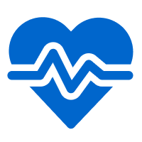

University Health Service (UHS)

Access comprehensive medical care, including routine check-ups, vaccinations, and specialist referrals at the University Health Service.

Your Comprehensive Guide to Resources for Graduate School Success!
This guide is set up to help you be successul inside and outside of the classroom. This page will be a resource guide for physical health, mental wellbeing, and life apart from academics.
Learn where to go for health-related needs and services on campus.
Discover resources to prioritize mental wellbeing through counseling and other support systems.
Develop a balance between school and personal life by finding campus activities and getting plugged in.
Keeping your body healthy is essential for success. The University of Michigan offers numerous resources to help you stay in top physical condition.
Access comprehensive medical care, including routine check-ups, vaccinations, and specialist referrals at the University Health Service.

Participate in various fitness programs, sports clubs, and use of gym facilities to stay active and healthy.
Maintaining your mental well-being is crucial for thriving in graduate school. Here are resources to support your mental health:

Graduate school is more than just academics. It's important to cultivate a balanced life. Here are some resources to help you enjoy life outside the classroom: